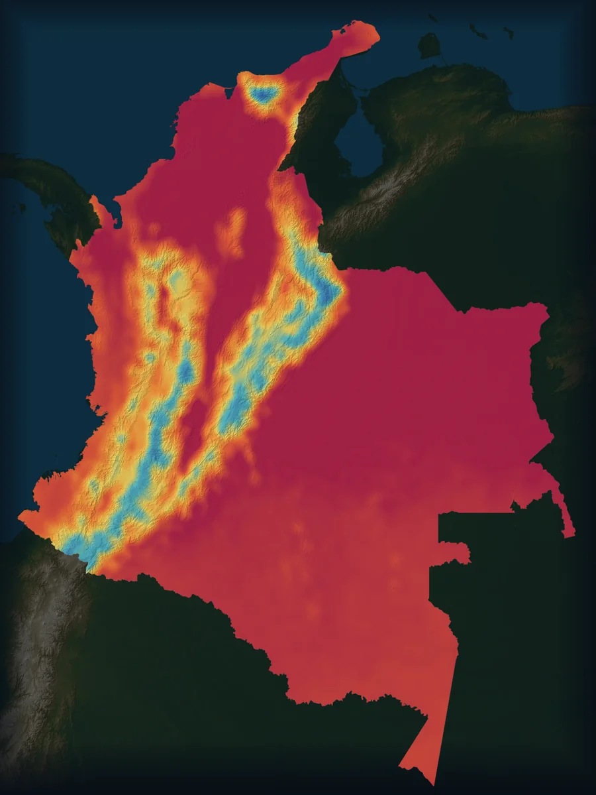
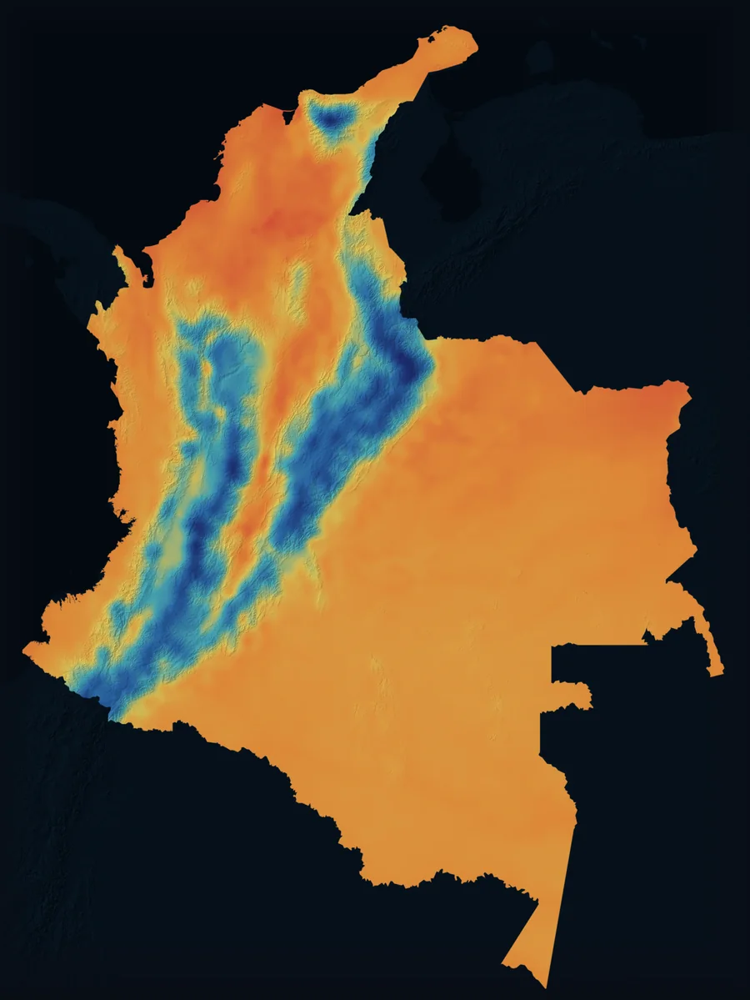

Consume el Caribe en la hora de las 3 a. m.; Bogotá y Cundinamarca, 857 MWh.
XM · enero de 2024

Capítulo 04 Demanda, calor y acceso
A las tres de la mañana la costa Caribe gasta más del doble de electricidad que Bogotá y Cundinamarca, con casi la misma gente. Recorre el reloj del país, el calor de la noche y lo que llega a la factura.
Atlántico al anochecer · Vuelo renderizado en Blender
01 · El video Capítulo 04
En Colombia no prendemos la luz a la misma hora. Míralo y luego mueve el reloj del país, el termómetro y la factura de cada municipio.
02 · XM Demanda hora a hora · enero de 2024
Colombia no tiene una sola hora pico: tiene tres. Cali llega a su máximo a las 2 de la tarde, Bogotá al anochecer y la costa a las 10 de la noche. Deja correr el día o arrastra la hora.
Cargando datos…
XM · demanda comercial regulada por mercado, promedio por hora de enero de 2024. Cada curva está en porcentaje de su propio máximo para comparar las formas.
Consume el Caribe en la hora de las 3 a. m.; Bogotá y Cundinamarca, 857 MWh.
XM · enero de 2024
La costa gasta más del doble de madrugada, con 12,1 millones de habitantes frente a 11,4 millones.
XM · DANE, proyecciones 2024
La hora pico del Caribe. El momento de menos consumo no es la madrugada: es las 7 de la mañana.
XM · perfil horario
Horas pico distintas: 14 h en Cali–Yumbo, 19 h en Bogotá–Cundinamarca y 22 h en el Caribe.
XM · enero de 2024
03 · ERA5-Land Temperatura del aire a 2 m
A las tres de la mañana Barranquilla está a 26,6 °C: más calor que Bogotá a las dos de la tarde, con 18,2 °C. Arrastra la cortina entre la madrugada y la tarde, o activa el parpadeo.
Por eso la regulación reconoce un consumo de subsistencia distinto según la altura: 173 kWh al mes por debajo de 1.000 metros y 130 por encima.
ECMWF ERA5-Land en Google Earth Engine, promedio de enero y febrero de 2024 · UPME, Resolución 355 de 2004


3:00 a. m.2:00 p. m.Lo que hay en la casa UPME · ECV 2025
Y los ventiladores se llevan el 27,7 % de la electricidad de las casas del Caribe, según la estimación de la UPME.
UPME · Proyección de demanda 2026–2040, tabla 2 ↗04 · SUI y DANE Consumo residencial · ene–feb 2024
En su casa, una persona en Barranquilla gasta casi el doble de electricidad que una en Bogotá. Pero Soledad, pegada a Barranquilla y con el mismo calor, factura un tercio menos. Gira el mapa y compara.
SUI (Superservicios), consumo residencial facturado en enero y febrero de 2024, dividido por la población municipal proyectada del DANE. Arrastra para girar el mapa.
05 · Cruce propio Calor, consumo y cobertura
No. Buenaventura y Tumaco también son tierra caliente, y gastan la tercera y la cuarta parte que Cartagena. En Uribia solo una de cada diez viviendas tiene electricidad. El calor decide cuánta energía necesitas; el acceso, cuánta puedes usar.
Pasa el cursor por un círculo para ver el municipio.
Temperatura: ERA5-Land a las 3 a. m. (ene–feb 2024), muestreada en la cabecera. Consumo: SUI y DANE. Cobertura: UPME, Índice de Cobertura de Energía Eléctrica 2024. El eje vertical se corta en 4 kWh.
Gasta una persona en Riohacha frente a una en Uribia, en el mismo departamento.
SUI · DANE
De las viviendas de Uribia tiene electricidad; en Riohacha, el 84,5 %.
UPME · ICEE 2024
kWh por persona al día en Buenaventura; en Cartagena, 2,81; en Tumaco, 0,61.
SUI · DANE
Consume Soledad frente a Barranquilla. Soacha, frente a Bogotá: −30 %.
SUI · DANE
06 · XM Demanda de enero a octubre, 2021–2026
De las grandes regiones, la costa es la que más rápido crece: en cinco años su consumo subió más de una cuarta parte, casi el triple que Bogotá. Las curvas se dibujan con el scroll.
XM · demanda comercial regulada y no regulada por mercado, promedio diario de enero a octubre. El Caribe incluye a Cesar desde agosto de 2026.
29,3%
de la energía del país se consume en el Caribe: tres de cada diez kilovatios hora.
La costa no duerme. Y la red tampoco.
Que cada región pida energía a una hora distinta puede ser una ventaja, si una red las une: la energía se mueve de donde sobra a donde falta, en cada momento.

Siguiente Capítulo 05